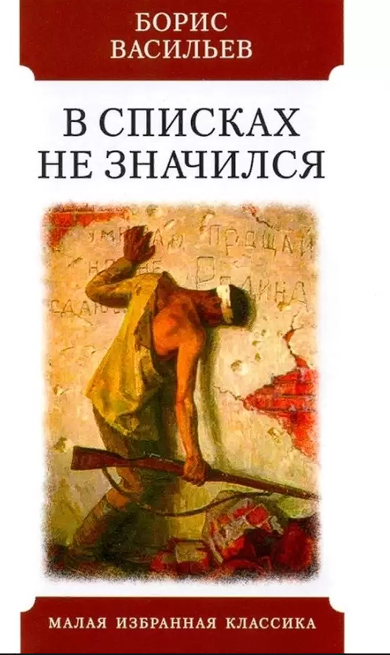

Васильев, Б.Л.
В списках не значился : Роман. [Для сред. и ст. шк. возраста] / Борис Васильев; [Послесл. В. Туниманова]. - Барнаул :
Алт. кн. изд-во, 1985. - 216 с. - (Шк. б-ка)
События повести развиваются накануне и
на начальной стадии войны. Главный герой
произведения – молодой, красивый, в новом
обмундировании лейтенант Плужников,
только закончивший военное училище,
направляется к постоянному месту
службы...
Совсем недалеко от Москвы: меньше суток
идет поезд, стоит Брестская крепость. Здесь громко не
говорят: слишком оглушающими были дни сорок первого
года и слишком многое помнят эти камни. Сдержанные
экскурсоводы сопровождают группы по местам боев, и
вы можете спуститься в подвалы 333-го полка,
прикоснуться к оплавленным огнеметами кирпичам,
пройти к Тереспольским и Холмским воротам или молча
постоять под сводами бывшего костела. Крепость не
пала. Крепость истекла кровью. Историки не любят
легенд, но вам непременно расскажут о неизвестном
защитнике, которого немцам удалось взять только на
десятом месяце войны. На десятом, в апреле 1942 года.
Почти год сражался этот человек. Год боев в
неизвестности, без соседей слева и справа, без приказов и
тылов, без смены и писем из дома. Время не донесло ни
его имени, ни звания, но мы знаем, что это был русский
солдат...